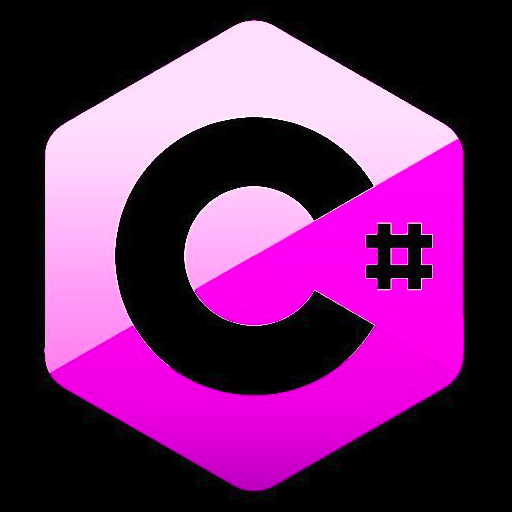

C# (pronuncia-se "C Sharp") é uma linguagem de programação de alto nível, orientada a objetos, desenvolvida pela Microsoft como parte da plataforma .NET. Foi lançada em 2000 e é uma das linguagens mais populares para o desenvolvimento de aplicativos Windows, jogos, aplicativos móveis e Web.Java é uma linguagem de programação orientada a objetos e de alto nível, amplamente utilizada para o desenvolvimento de aplicativos corporativos, aplicações Web, aplicativos móveis, jogos e sistemas embarcados. A linguagem Java é multiplataforma, o que permite que os programas escritos em Java possam ser executados em diferentes sistemas operacionais.Python é uma linguagem de programação de alto nível, interpretada e orientada a objetos, amplamente utilizada para uma variedade de tarefas de programação, desde o desenvolvimento de aplicativos Web e de desktop até a análise de dados e aprendizado de máquina. Uma das principais vantagens do Python é sua sintaxe simples e legível, que permite que os programadores escrevam código de forma rápida e eficiente.R é uma linguagem de programação e ambiente de software livre voltada para análise de dados e estatística, com uma sintaxe simples e poderosas ferramentas para manipulação e visualização de dados, R permite a criação de gráficos e análises estatísticas avançadas, como regressões lineares e análises de séries temporais.